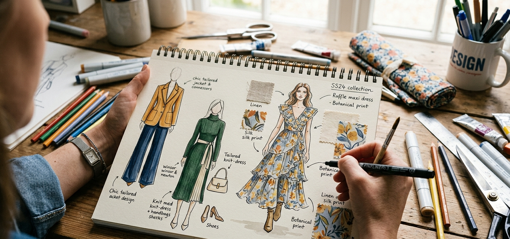

Student Work 06
Home Decor Design
Embroidered Pillow Project
In this Home Decor Design project, I embroidered a pillow to create a decorative home accent. I practiced using embroidery techniques, choosing a design, and adding detail to fabric in a way that made the pillow feel more personalized and visually interesting.
This project helped me improve my handwork skills, creativity, and understanding of how textile details can enhance home decor.
